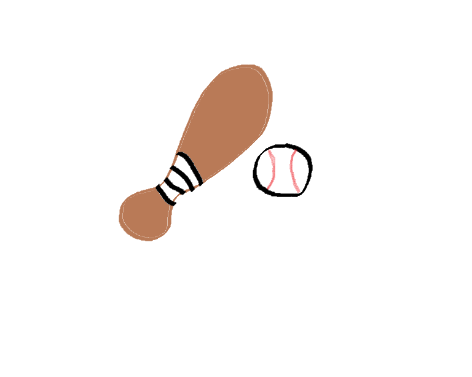
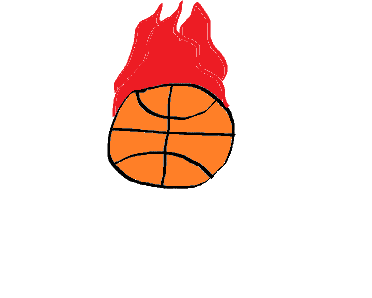

The Big Home Run Hitter!
On Sunday afternoon, history was made when rookie pitcher, Mike the Tike, who hit 3 home runs during his 4 at bats in the game on Sunday. The GM (General Manager) of the Bluebirds was even surprised at this outcome. Nobody has ever seen this kid swing like this before and it was amazing. The next game for the Bluebirds is this Tuesday vs. the Raptors and is a sell-out crowd. Everyone is hoping to witness even more history at the next upcoming game...
The Man With Money
The starting cornerback for the Jets, Grant Howard, was an orphan from birth. With no other place to call home, he lived in an orphanage on the west side of Seattle for almost his whole child life, until a nice couple had adopted him at the age of 16. Last Monday marked the day when this young star was adopted, and to celebrate this he donated over $35,000 to the orphanage of which he came from. He felt like it was his obligation to give those kids more so they felt like they had a chance of leaving one day and finding a home like he did...

Too Much to Handle
In the opening game of the preseason opener, the Blackhawks scored a total of 135 points against the reigning champions on Sunday afternoon. This is the most a team has scored on the reigning NBA champs for almost three whole decades. With the young offensive talent that the Blackhawks have, they may be trouble for a lot of defenses in the NBA come this season. Many are already getting their hopes high for an NBA to be won by the Blackhawks next season...
